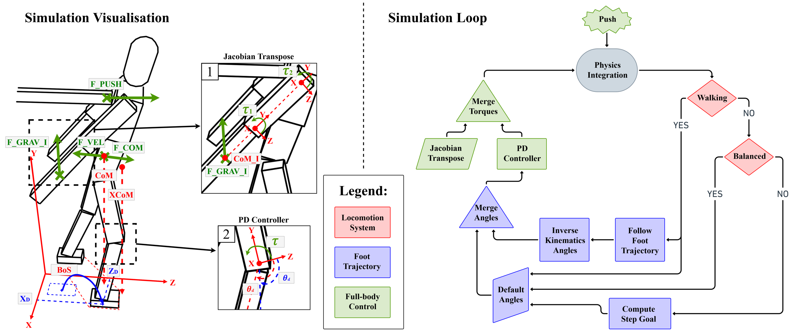
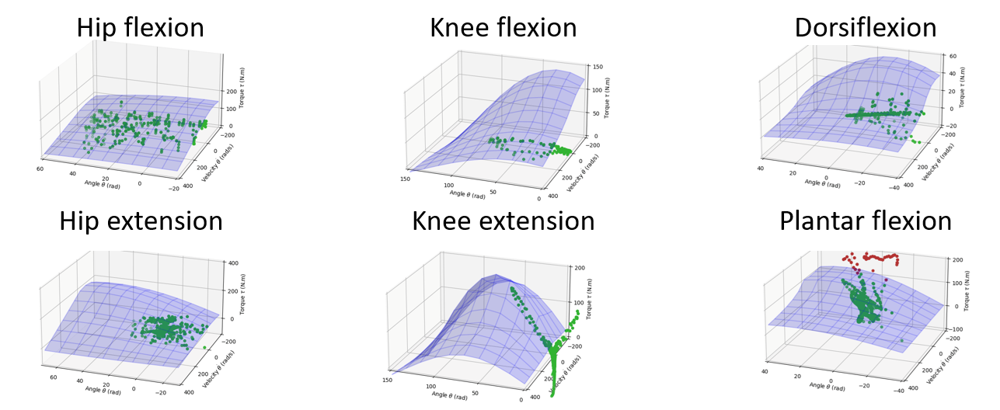

Physical Simulation of Balance Recovery after a Push
Alexis Jensen1, Thomas Chatagnon1, Niloofar Khoshsiyar2, Daniele Reda2, Michiel van de Panne2, Charles Pontonnier1, Julien Pettré1
1INRIA, IRISA, Univ Rennes, ENS, France, 2UBC: University of British Columbia, Computer Science, Canada
In MIG '23: Proceedings of the 16th ACM SIGGRAPH Conference on Motion, Interaction and Games



Abstract
Our goal is to simulate how humans recover balance after external perturbation, e.g., being pushed. While different strategies can be adopted to achieve balance recovery, we particularly aim at replicating how humans combine the control of their support area with the control of their body movement to regain balance when it is necessary. We develop a physics-based approach to simulate balance recovery, with two main contributions to achieve our goal: a foot control technique to adjust the shape of a character's support zone to the motion of its center of mass (CoM), and the dynamic control of the CoM to maintain its vertical projection in this same zone. We also calibrate the simulation by optimisation, before validating our results against experimental data.
Video
BibTeX Citation
@inproceedings{10.1145/3623264.3624448,
author = {Jensen, Alexis and Chatagnon, Thomas and Khoshsiyar, Niloofar and Reda, Daniele and Van De Panne, Michiel and Pontonnier, Charles and Pettr\'{e}, Julien},
title = {Physical Simulation of Balance Recovery after a Push},
year = {2023},
isbn = {9798400703935},
publisher = {Association for Computing Machinery},
address = {New York, NY, USA},
url = {https://doi.org/10.1145/3623264.3624448},
doi = {10.1145/3623264.3624448},
articleno = {23},
numpages = {11},
series = {MIG '23}
}